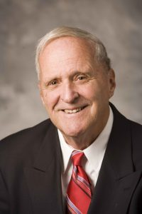

Who is V.Vroom?

이름
빅터 해럴드 브룸
(Victor Harold Vroom)
출생
1932년 8월 9일
캐나다 몬트리올
직업
교수, 심리학자
1949 부친 강요로 은행 입사
1950~1955 McGill University 석사 및 학사 학위 취득
1958 University of Michigan 박사학위 취득
1964 기대이론을 고안하고 『일과 동기부여』 집행
1972~ 예일대학교 재직 및 리더십, 의사결정 분야의 세계적 권위자로서 노키아 벨 연구소, 아메리칸 익스프레스 등 50여개가 넘는 세계 유수의 기업들을 대상으로 컨설팅 제공
더 자세한 생애를 알고 싶다면!
기대이론 정의👩🏫